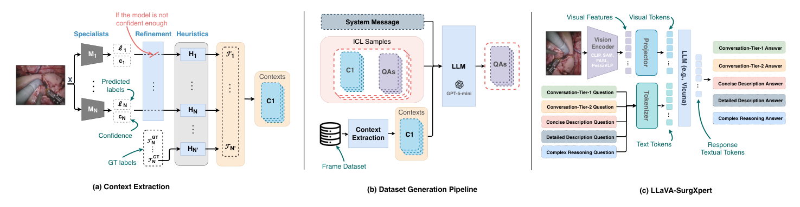
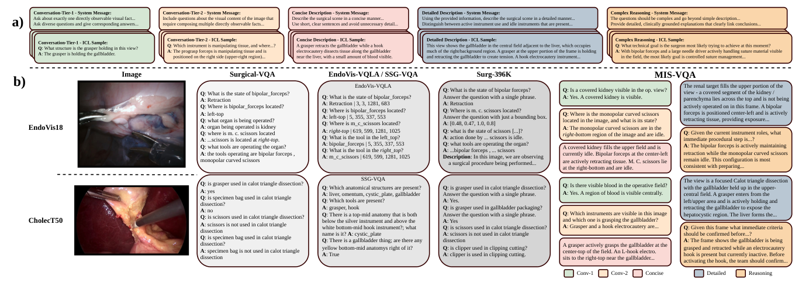
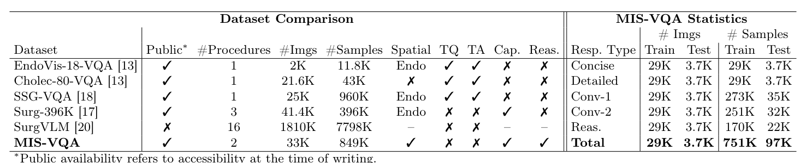

图文解读
1背景与动机
手术画面里的空间关系和流程状态很难由人逐帧写成文字,所以已有手术问答数据大多靠模板凑短答案。 阶段识别、分割、三元组识别这些单任务模型已经成熟,但它们不能用自然语言对话。
作者列出已有数据的四个缺口:问题多为短事实或分类题;Cholec 系列只有 CholecSeg8k 有掩码,所以 Cholec80-VQA、Surg-396K 没有空间监督;模板出题让语言单一;简述和详述两类描述监督不齐全。
下一节看论文怎样补这些缺口。
2核心观点速览
论文的做法是:先把已有标注写成文字,再让大模型照着文字"看图出题"。
- 数据:EndoVis18 与 CholecT50 两个来源,共 33K 帧、849K 条问答和描述。
- 五种回答类型:简述、详述、单事实问答 Conv-1、多事实组合问答 Conv-2、复杂推理。
- 关键做法:CholecT50 缺掩码的帧用 FASL 预测补全,置信度高于 0.9 才用,并在提示词里标明来源。
- 结果:换用 SAM 编码器的对照模型在胆囊切除子集推理题上评委分 81.92 最高;对话题上 EndoChat 仍然领先。
边界:生成答案没有人工抽检,评委分没有与人工评分校准,置信度过滤没有消融。
3标注怎样变成文字
两个来源的标注完整度差别很大。EndoVis18 每帧都有分割掩码和器械-组织交互标签,直接按规则转写。CholecT50 的标注拼自三处:阶段和三元组来自 CholecT50,器械存在来自 Cholec80,掩码只在 CholecSeg8k 子集里有。
缺掩码的帧用 FASL 预测,FASL 在完整 CholecSeg8k(训练加测试)上训练。置信度低于 0.9 时不写空间信息。提示词会告诉生成模型空间信息来自真值还是预测。

作者只用一句观察说明过滤减少了噪声,没有去掉预测掩码的消融。
下一节看文字怎样变成问答。
4文字怎样变成问答
上下文、按类型设计的系统提示、外科医生写的示范样例一起交给 GPT-5-mini,要求它"像直接看图一样"出题。作者在一个子集上比较了 GPT-5、GPT-5-mini、GPT-5-nano,认为 GPT-5 太啰嗦、GPT-5-nano 有时笼统,选了 GPT-5-mini;比较是定性的。
取帧规则:1 fps 下阶段、器械或三元组任一变化即取样,最长间隔 5 秒,长静止段补中点帧。引用了不存在器械的三元组会被删掉。

每帧生成几条对话题和推理题,论文未说明。Conv-1 训练样本 273K 对应 29K 帧,平均约每帧 9 条。
下一节看规模和划分。
5规模与划分
| 类型 | 训练样本 | 测试样本 |
|---|---|---|
| Concise | 29K | 3.7K |
| Detailed | 29K | 3.7K |
| Conv-1 | 273K | 35K |
| Conv-2 | 251K | 32K |
| Reasoning | 170K | 22K |
| 合计 | 751K | 97K |
划分按视频:EndoVis18 测试序列 1、5、16,沿用 EndoVis-VQA;CholecT50 测试视频 5、12、26、27、31,沿用 Cholec80-VQA 的测试交集。
代码仓库首页给出 CholecT50 训练 27,063 帧、测试 3,247 帧,EndoVis18 训练 1,788 帧、测试 447 帧。胆囊切除子集约占九成,两个子集的结论分量不对等。
下一节看评测怎样打分。
6对照模型与评分
LLaVA-SurgXpert 固定投影层和 Vicuna 语言模型,只换编码器:CLIP、SAM、FASL、PeskaVLP。四种编码器的输出都重排成 1024 个视觉标记。训练分两段:先只训投影层 2 轮,学习率 1e-3;再联合训投影层和低秩适配器 1 轮,学习率 2e-5。
指标有 BLEU、CIDEr、METEOR、余弦相似度,以及评委分 GPT-Score。评委 GPT-5-nano 读取同一份标注上下文给答案打分,再用参考答案的得分归一化。归一化公式论文未说明。
下一节看结果。
7结果说了什么

表 1 中 MIS-VQA 是唯一同时有空间监督、描述和推理的数据集,但样本数少于 SSG-VQA 的 960K,术式只有两种。
表 2 的评委分要点:
| 子集 | 题型 | 最好 | 分数 |
|---|---|---|---|
| EndoVis | Conv-1 | SAM 版 | 62.51 |
| EndoVis | Reasoning | FASL 版 | 78.47 |
| Cholec | Conv-1 | EndoChat | 73.15 |
| Cholec | Reasoning | SAM 版 | 81.92 |
- 内镜机器人子集上,第一名都是两个分割编码器之一。
- 胆囊切除子集上,对话题 EndoChat 最好,FASL 版在五类评委分上都是对照模型中最低的。
- PeskaVLP 版在内镜机器人子集上排最后,单事实问答 55.29 低于 VisualBert 的 59.37。
下一节看这些分数测到了什么。
8分数测到了什么
答案来自标注上下文,所以数据集测的是"能否从图像恢复出标注里的信息并说出来"。标注里没有的内容,模型说对了也得不到分。
评委与生成器同属 GPT-5 系列,读的是同一份上下文。作者用 EndoChat 的 BLEU-1 54.06 最高而评委分 60.95 偏低,论证评委分更可靠;但没有与人工评分比较,这只说明两类指标不一致,不说明哪个对。
内镜机器人推理题上 FASL 版 78.47 对 SAM 版 78.44,差 0.03,没有方差,这样的排名不稳定。
下一节列出使用前要核对的事项。
9复现与使用要注意什么
- 数据在 Hugging Face 上门控发布:填姓名、单位并勾选非商用、已申请图像两项条款后可下载,许可 CC BY-NC-SA 4.0。
- 数据只含文本,图像要分别向 CAMMA 和 EndoVis 2018 挑战网站申请。
- 测试帧的空间上下文也可能来自 FASL 预测,而 FASL 用 CholecSeg8k 全部数据训练,要先确认其中是否含测试视频。
- 正文把两个 BLEU 值写成同一个 54.06,表 2 中 BLEU-3 为 42.57,引用时以表为准。